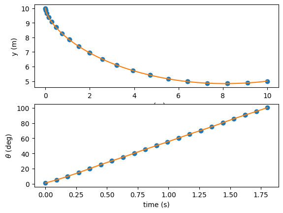

How do I connect a scalar input to the ODE?#
By default, we recommend that users treat all ODE input variables as if they are potentially dynamic. This allows the user to use the input as either a dynamic control, or as a static design or input parameter. By default, parameters will “fan” the value out to all nodes. This allows the partials to be defined in a consistent fashion (generally a diagonal matrix for a scalar input and output) regardless of whether the input is static or dynamic.
But there are some cases in which the user may know that a variable will never have the potential to change throughout the trajectory. In these cases, we can reduce a bit of the data transfer OpenMDAO needs to perform by defining the input as a scalar in the ODE, rather than sizing it based on the number of nodes.
The Brachistochrone with a static input.#
The local gravity g in the brachistochrone problem makes a good candidate for a static input parameter.
The brachistochrone generally won’t be in an environment where the local acceleration of gravity is varying by any significant amount.
In the slightly modified brachistochrone example below, we add a new option to the BrachistochroneODE static_gravity that allows us to decide whether gravity is a vectorized input or a scalar input to the ODE.
import numpy as np
import openmdao.api as om
class BrachistochroneODE(om.ExplicitComponent):
def initialize(self):
self.options.declare('num_nodes', types=int)
self.options.declare('static_gravity', types=(bool,), default=False,
desc='If True, treat gravity as a static (scalar) input, rather than '
'having different values at each node.')
def setup(self):
nn = self.options['num_nodes']
# Inputs
self.add_input('v', val=np.zeros(nn), desc='velocity', units='m/s')
if self.options['static_gravity']:
self.add_input('g', val=9.80665, desc='grav. acceleration', units='m/s/s',
tags=['dymos.static_target'])
else:
self.add_input('g', val=9.80665 * np.ones(nn), desc='grav. acceleration', units='m/s/s')
self.add_input('theta', val=np.ones(nn), desc='angle of wire', units='rad')
self.add_output('xdot', val=np.zeros(nn), desc='velocity component in x', units='m/s',
tags=['dymos.state_rate_source:x', 'dymos.state_units:m'])
self.add_output('ydot', val=np.zeros(nn), desc='velocity component in y', units='m/s',
tags=['dymos.state_rate_source:y', 'dymos.state_units:m'])
self.add_output('vdot', val=np.zeros(nn), desc='acceleration magnitude', units='m/s**2',
tags=['dymos.state_rate_source:v', 'dymos.state_units:m/s'])
self.add_output('check', val=np.zeros(nn), desc='check solution: v/sin(theta) = constant',
units='m/s')
# Setup partials
arange = np.arange(self.options['num_nodes'])
self.declare_partials(of='vdot', wrt='theta', rows=arange, cols=arange)
self.declare_partials(of='xdot', wrt='v', rows=arange, cols=arange)
self.declare_partials(of='xdot', wrt='theta', rows=arange, cols=arange)
self.declare_partials(of='ydot', wrt='v', rows=arange, cols=arange)
self.declare_partials(of='ydot', wrt='theta', rows=arange, cols=arange)
self.declare_partials(of='check', wrt='v', rows=arange, cols=arange)
self.declare_partials(of='check', wrt='theta', rows=arange, cols=arange)
if self.options['static_gravity']:
c = np.zeros(self.options['num_nodes'])
self.declare_partials(of='vdot', wrt='g', rows=arange, cols=c)
else:
self.declare_partials(of='vdot', wrt='g', rows=arange, cols=arange)
def compute(self, inputs, outputs):
theta = inputs['theta']
cos_theta = np.cos(theta)
sin_theta = np.sin(theta)
g = inputs['g']
v = inputs['v']
outputs['vdot'] = g * cos_theta
outputs['xdot'] = v * sin_theta
outputs['ydot'] = -v * cos_theta
outputs['check'] = v / sin_theta
def compute_partials(self, inputs, partials):
theta = inputs['theta']
cos_theta = np.cos(theta)
sin_theta = np.sin(theta)
g = inputs['g']
v = inputs['v']
partials['vdot', 'g'] = cos_theta
partials['vdot', 'theta'] = -g * sin_theta
partials['xdot', 'v'] = sin_theta
partials['xdot', 'theta'] = v * cos_theta
partials['ydot', 'v'] = -cos_theta
partials['ydot', 'theta'] = v * sin_theta
partials['check', 'v'] = 1 / sin_theta
partials['check', 'theta'] = -v * cos_theta / sin_theta ** 2
In the corresponding run script, we pass {'static_gravity': True} as one of the ode_init_kwargs to the Phase, and declare \(g\) as a static design variable using the dynamic=False argument.
import openmdao.api as om
import dymos as dm
import matplotlib.pyplot as plt
from dymos.examples.brachistochrone.brachistochrone_ode import BrachistochroneODE
#
# Initialize the Problem and the optimization driver
#
p = om.Problem(model=om.Group())
p.driver = om.ScipyOptimizeDriver()
p.driver.declare_coloring()
#
# Create a trajectory and add a phase to it
#
traj = p.model.add_subsystem('traj', dm.Trajectory())
phase = traj.add_phase('phase0',
dm.Phase(ode_class=BrachistochroneODE,
ode_init_kwargs={'static_gravity': True},
transcription=dm.GaussLobatto(num_segments=10)))
#
# Set the variables
#
phase.set_time_options(fix_initial=True, duration_bounds=(.5, 10))
phase.add_state('x', rate_source='xdot',
targets=None,
units='m',
fix_initial=True, fix_final=True, solve_segments=False)
phase.add_state('y', rate_source='ydot',
targets=None,
units='m',
fix_initial=True, fix_final=True, solve_segments=False)
phase.add_state('v', rate_source='vdot',
targets=['v'],
units='m/s',
fix_initial=True, fix_final=False, solve_segments=False)
phase.add_control('theta', targets=['theta'],
continuity=True, rate_continuity=True,
units='deg', lower=0.01, upper=179.9)
phase.add_parameter('g', targets=['g'], static_target=True, opt=False)
#
# Minimize time at the end of the phase
#
phase.add_objective('time', loc='final', scaler=10)
#
# Setup the Problem
#
p.setup()
#
# Set the initial values
# The initial time is fixed, and we set that fixed value here.
# The optimizer is allowed to modify t_duration, but an initial guess is provided here.
#
p.set_val('traj.phase0.t_initial', 0.0)
p.set_val('traj.phase0.t_duration', 2.0)
# Guesses for states are provided at all state_input nodes.
# We use the phase.interpolate method to linearly interpolate values onto the state input nodes.
# Since fix_initial=True for all states and fix_final=True for x and y, the initial or final
# values of the interpolation provided here will not be changed by the optimizer.
p.set_val('traj.phase0.states:x', phase.interp('x', [0, 10]))
p.set_val('traj.phase0.states:y', phase.interp('y', [10, 5]))
p.set_val('traj.phase0.states:v', phase.interp('v', [0, 9.9]))
# Guesses for controls are provided at all control_input node.
# Here phase.interpolate is used to linearly interpolate values onto the control input nodes.
p.set_val('traj.phase0.controls:theta', phase.interp('theta', [5, 100.5]))
# Set the value for gravitational acceleration.
p.set_val('traj.phase0.parameters:g', 9.80665)
#
# Solve for the optimal trajectory
#
dm.run_problem(p, simulate=True)
# Generate the explicitly simulated trajectory
sim_prob_dir = traj.sim_prob.get_outputs_dir()
exp_out = om.CaseReader(sim_prob_dir / 'dymos_simulation.db').get_case('final')
# Extract the timeseries from the implicit solution and the explicit simulation
x = p.get_val('traj.phase0.timeseries.x')
y = p.get_val('traj.phase0.timeseries.y')
t = p.get_val('traj.phase0.timeseries.time')
theta = p.get_val('traj.phase0.timeseries.theta')
x_exp = exp_out.get_val('traj.phase0.timeseries.x')
y_exp = exp_out.get_val('traj.phase0.timeseries.y')
t_exp = exp_out.get_val('traj.phase0.timeseries.time')
theta_exp = exp_out.get_val('traj.phase0.timeseries.theta')
fig, axes = plt.subplots(nrows=2, ncols=1)
axes[0].plot(x, y, 'o')
axes[0].plot(x_exp, y_exp, '-')
axes[0].set_xlabel('x (m)')
axes[0].set_ylabel('y (m)')
axes[1].plot(t, theta, 'o')
axes[1].plot(t_exp, theta_exp, '-')
axes[1].set_xlabel('time (s)')
axes[1].set_ylabel(r'$\theta$ (deg)')
plt.show()
--- Constraint Report [traj] ---
--- phase0 ---
None
Model viewer data has already been recorded for Driver.
Full total jacobian for problem 'problem' was computed 3 times, taking 0.08455900900003144 seconds.
Total jacobian shape: (40, 50)
Jacobian shape: (40, 50) (13.40% nonzero)
FWD solves: 8 REV solves: 0
Total colors vs. total size: 8 vs 50 (84.00% improvement)
Sparsity computed using tolerance: 1e-25
Time to compute sparsity: 0.0846 sec
Time to compute coloring: 0.0219 sec
Memory to compute coloring: 0.1250 MB
Coloring created on: 2024-11-04 20:52:39
Optimization terminated successfully (Exit mode 0)
Current function value: 18.016167304638337
Iterations: 24
Function evaluations: 24
Gradient evaluations: 24
Optimization Complete
-----------------------------------
/usr/share/miniconda/envs/test/lib/python3.11/site-packages/openmdao/core/group.py:1137: DerivativesWarning:Constraints or objectives [ode_eval.control_interp.control_rates:theta_rate, ode_eval.control_interp.control_rates:theta_rate2, ode_eval.control_interp.control_values:theta] cannot be impacted by the design variables of the problem because no partials were defined for them in their parent component(s).
Simulating trajectory traj
Model viewer data has already been recorded for Driver.
Done simulating trajectory traj
